Overview
FemEntity is an AI-powered wellness platform that helps users find practitioners and resources based on their needs and preferences.
I joined after the initial onboarding concept had already been designed. I redesigned the flow and iterated on it as the product evolved, focusing on making the experience easier to get through without asking users to answer everything upfront.
The challenge was finding the right balance: we needed enough information for relevant personalization, but didn't want users to spend too much time answering questions before seeing value.
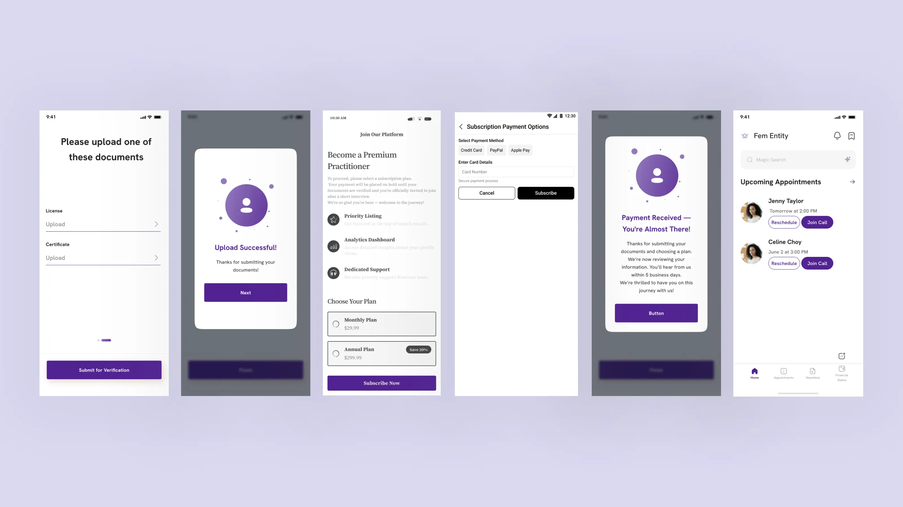
Initial onboarding draft done by non-designers
Problem
The onboarding asked too much, too soon
Across 2 user types (clients and practitioners), users had to answer a long series of questions before reaching value. This created unnecessary mental load, especially when sharing sensitive personal information.
The value wasn't always clear
Users were more comfortable sharing personal information when they understood why we were asking for it and how it would improve their experience.
We needed to simplify without losing useful data
The challenge was to decide what users needed to answer upfront and what could be collected later.
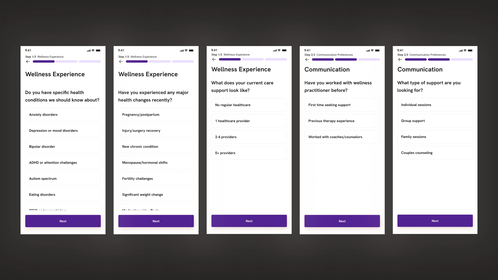
The previous onboarding. The flow asked for a lot of information upfront, with limited context around why it was needed.
Research
I ran a heuristic evaluation of the existing flow and a thematic analysis of 20 user interviews. Identified 19 usability issues (avg. severity 2.4/5) across the onboarding flow for 2 user types, and synthesized them into 15+ prioritized recommendations.
The interviews kept circling back to one point, where users were happy to share personal information, but only when they understood why we needed it and how it would make their recommendations better.
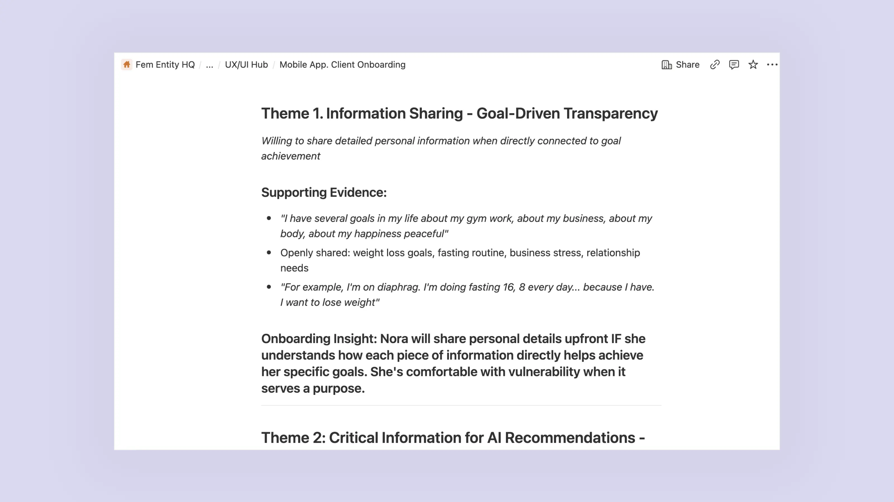
Thematic analysis from user interviews, surfacing key issues around trust and cognitive load.
Approach
In the redesign, I prioritized getting users to value faster, reducing the amount of thinking and decision-making required at the start, and making it clear why we needed each piece of personal information.
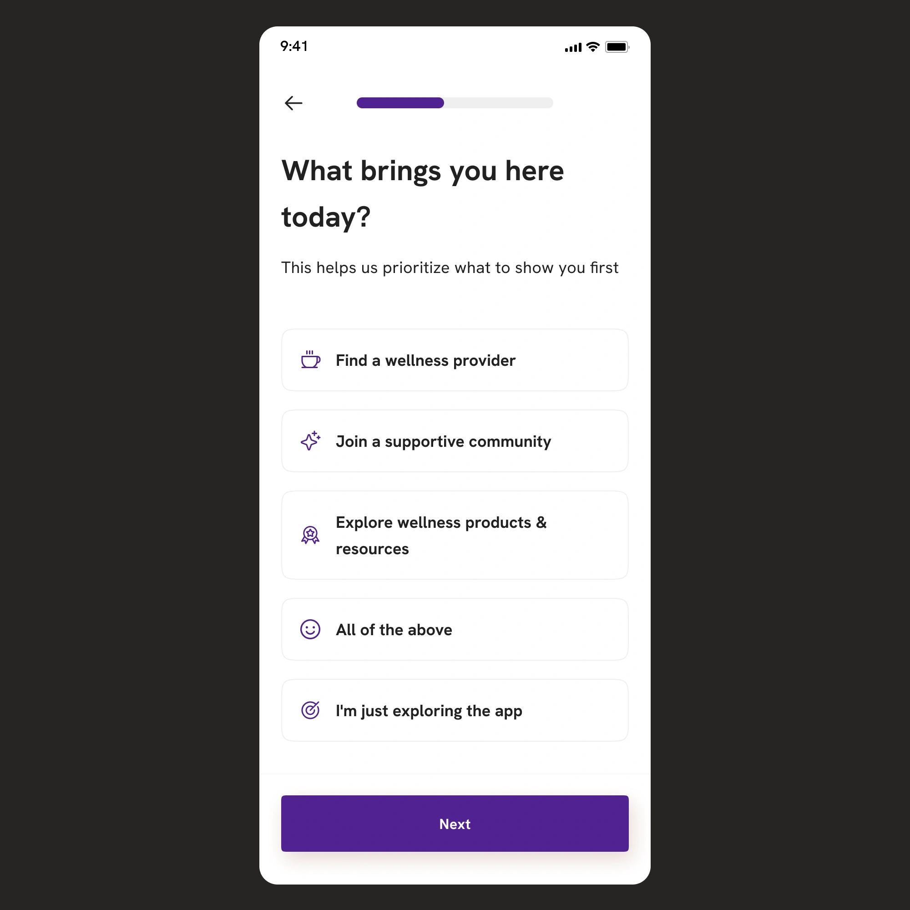
Rather than starting with demographic or personal details, we wanted to understand what the user was looking for first. This also helped connect the onboarding questions to the value FemEntity could provide.
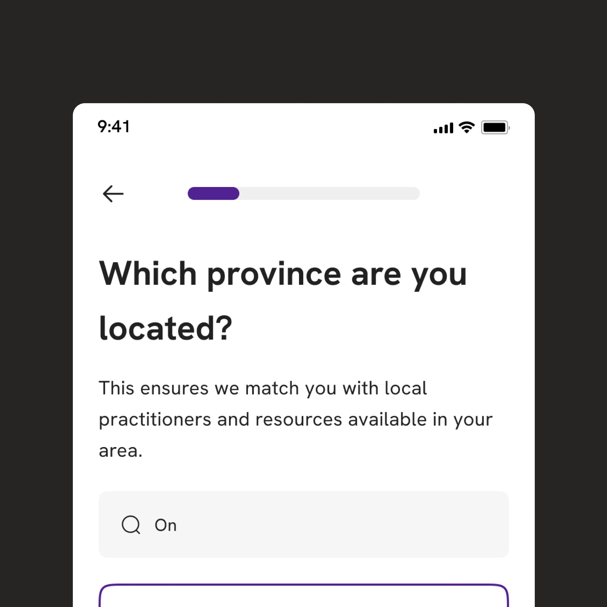
With my design colleague, we restructured the onboarding around progressive disclosure. Essential information comes first, while more detailed profile information can be collected later.
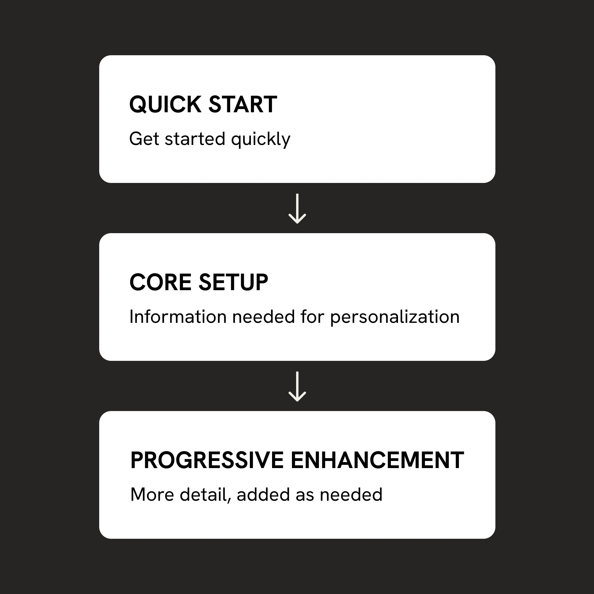
We added context around questions such as location, interests, and challenges instead of asking for information without explaining its purpose.
UI exploration
Small UI decisions also mattered, not just the overall flow. For example, I explored different chip styles and states: multi-select, single-select, colour-coded, and plain, and compared how clear and easy to scan they were when showing 10+ options on a small screen.
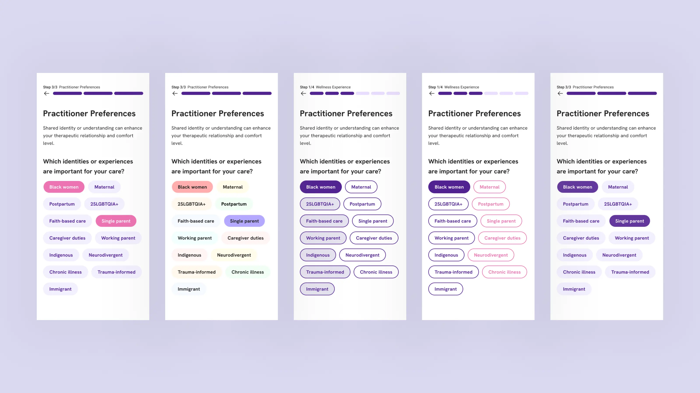
Chip explorations: colour, contrast, and selection states across multiple variants.
Two user types
FemEntity has two very different user types, so we couldn't use the same onboarding for both. I designed separate journeys for clients and practitioners, with different questions and priorities for each.
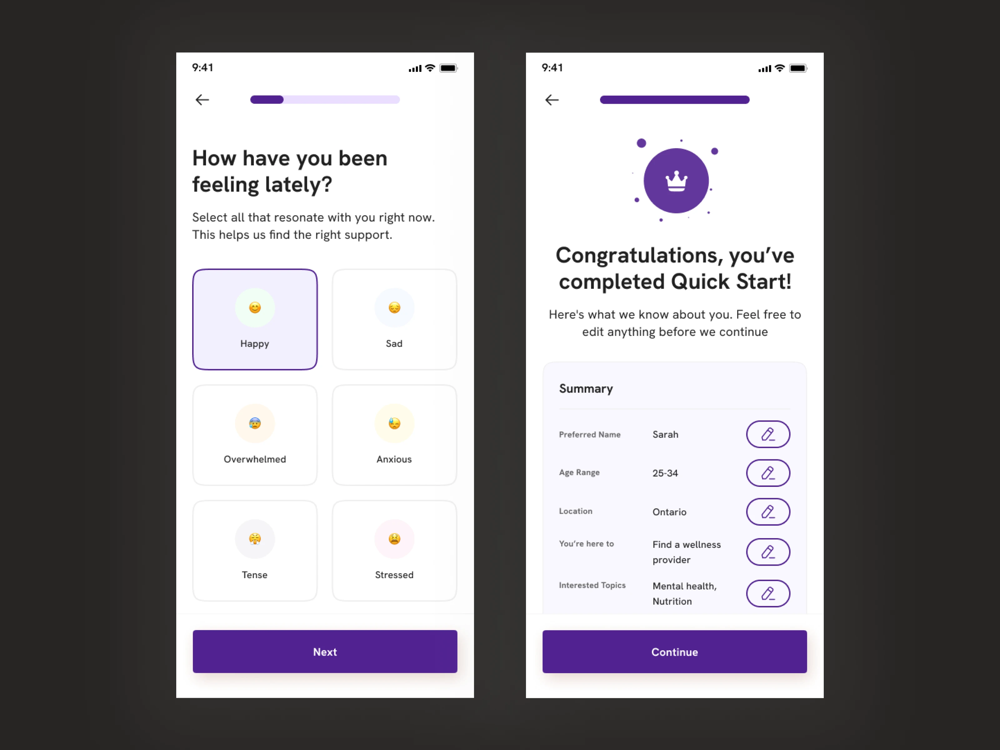
Client onboarding screens
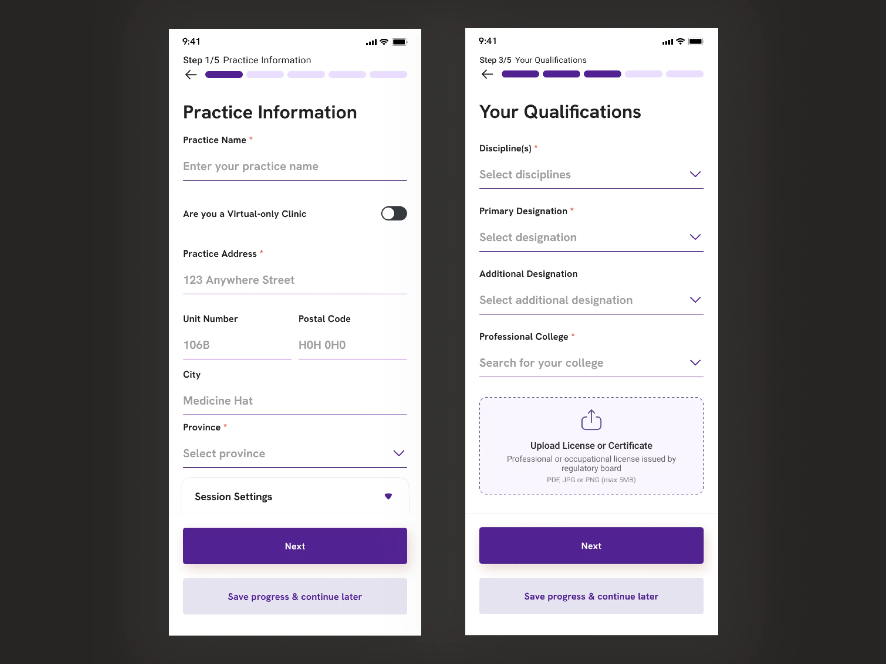
Practitioner onboarding screens
Simplifying the flow for users
FemEntity was still pre-launch, so we didn't have production data to compare completion rates. Instead, we used usability testing and user feedback to see whether the new flow was easier to understand and complete.
The final onboarding evolved through multiple iterations as we negotiated between keeping the flow simple for users and collecting enough structured data to power relevant recommendations and AI matching.
The final flow collects information in stages instead of asking users to complete everything at once.
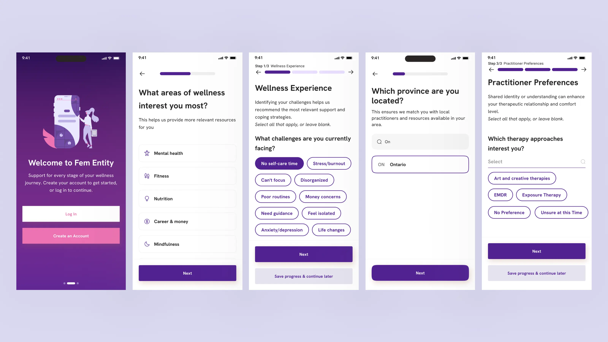
The final flow collects information in stages instead of asking users to complete everything at once.
Metrics & Usability Testing
To validate the redesigned flow, I defined a usability testing plan that measures both task performance and perceived experience. The study is currently in progress.
Test setup
- Participants: 8+ solo and clinic practitioners, 5+ clients planned
- Format: moderated, remote
- Tasks: create an account, complete onboarding, choose a plan, make a payment, book a session
Activation metrics
- Onboarding completion rate: share of participants who finish the flow without help.
- Drop-off per step: where participants abandon or hesitate.
- Time to complete: total time from account creation to the first booked session.
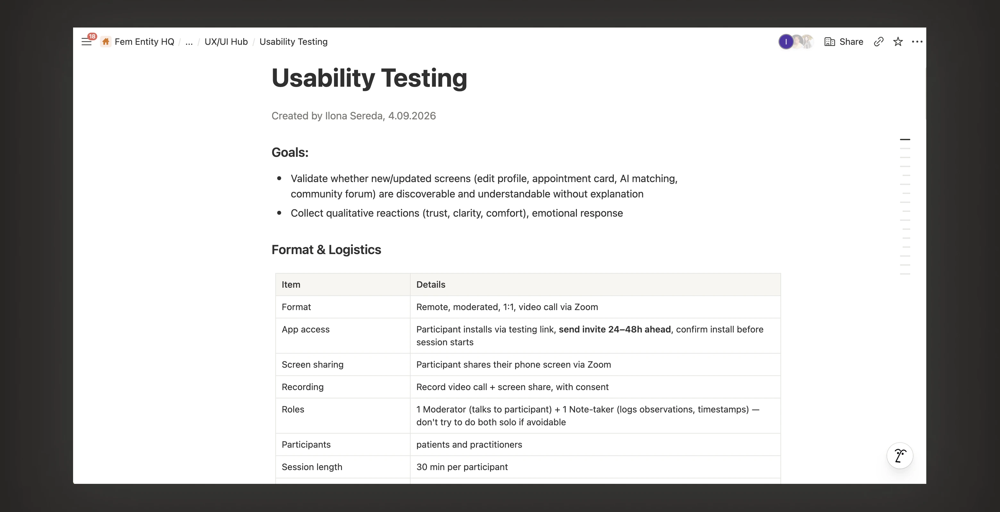
Usability testing document: measurement plan and data collection in progress.
Impact
Conversion data to be updated. The targets below are for post-launch validation, measured against the current flow, which I assessed through a flow audit and a heuristic evaluation.
Early usability validation
- The client participant rated the redesigned experience as easy to use (5/5) and reported a positive overall impression (4/5).
- Practitioner participants completed core account, profile, calendar, and profile-editing tasks without assistance.
- Onboarding was positively received for reducing the amount of information required upfront.
- Research identified priority improvements in save-state feedback, scheduling clarity, practitioner credibility, and the transition from onboarding to booking.
Post-launch targets
- Flow consistency (heuristic evaluation, 1-5): from 2/5 to 4/5
- Time to complete: from 5-7 min to 3-4 min
- SUS-5: average rating ≥4/5 across core statements
- Trust: improve confidence in sharing personal information and practitioner credibility
These targets will be validated through usability testing and post-launch data.
Key learning
Fewer screens do not automatically make onboarding easier. Users need to understand why information is being collected and how it improves their experience.
Progressive disclosure also needs reliable system feedback: users must know what has saved, what happens next, and whether they can complete remaining steps later.